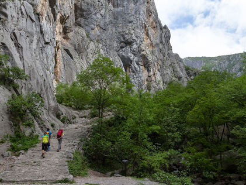
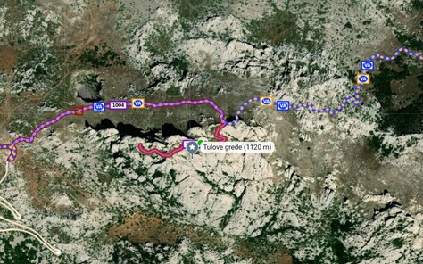
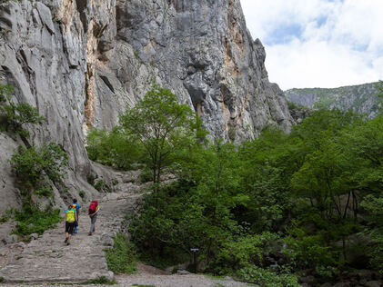
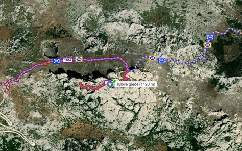

Tulove grede su u Domovinskom ratu bile jedno od strateški najvažnijih mjesta na Velebitu. Tulove grede su skupina visokih stijena neobičnih oblika koje izbijaju iz krša na južnom Velebitu. Nalaze se odmah pokraj ceste Obrovac-Sveti Rok i samim time su lako dostupne. Cesta je makadamska no vrlo dobre kvalitete pa njome mogu bez problema proći i obična osobna vozila. Na putu od Obrovca uz cestu se nalazi crkva Svetog Franje koju je u 19. stoljeću dao sagraditi austrijski car Franjo I. u spomen na novoizgrađenu cestu koja je spojila sjever i jug Hrvatske.
Mnoštvo spomen ploča poginulim braniteljima uz cestu podsjeća na ratna zbivanja i veliku stratešku važnost Velebita u Domovinskom ratu. Na planinarskom izletu će se obići sačuvani ostaci bunkera iz Domovinskog rata, a oni spretniji će se popeti na vrh Tulovih greda. Predavanje će održati samostalni policijski inspektor Dražen Perković, zapovjednik Specijalne jedinice policije Grom iz Karlovca. Drugi dan će se obići Crkva Sv. Frane u Podpragu. Izlet će trajati 2 dana.
Datum objave: 01.01.2024